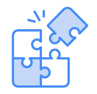

Scrum Master
Ali Perez
Coordinar las ceremonias del equipo, facilitar la comunicación efectiva y eliminar cualquier impedimento para asegurar un flujo de trabajo constante.
Motivación: “Me motiva lograr que el equipo trabaje unido y sin bloqueos, aplicando Scrum de verdad y no solo en la teoría.”
Institución: S.Q.S - Scrum Quality Service (2026)